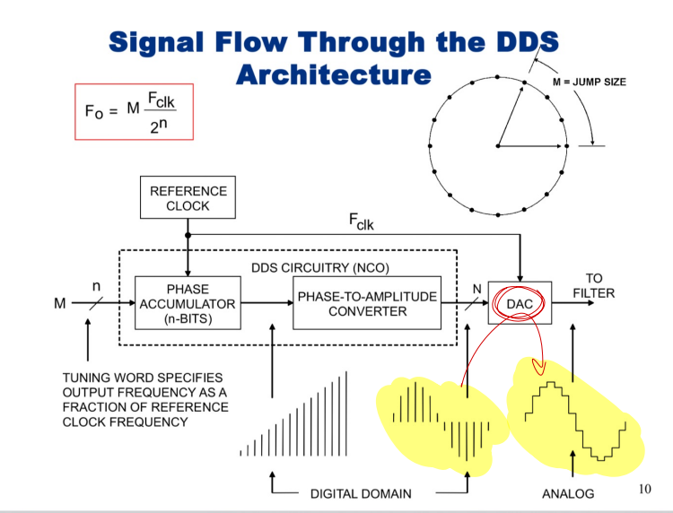

Lab 5 is a comprehensive Digital Signal Processing (DSP) project that implements a Direct Digital Synthesizer (DDS) on an FPGA. This lab demonstrates the design and integration of complex hardware modules for real-time signal generation and analysis.
Key Accomplishments:
Technical Implementation:
The DDS module generates precise, tunable waveforms at programmable frequencies by leveraging numerically-controlled oscillator (NCO) principles. The system employs phase accumulation and lookup table techniques for efficient hardware implementation. Signal processing blocks perform real-time filtering and frequency analysis, while the embedded processor manages system configuration and data collection.
This lab demonstrates expertise in digital signal processing fundamentals, FPGA-based real-time systems, and hardware-software integration. The working system validates understanding of DSP algorithms, FPGA optimization techniques, and embedded systems design methodologies.